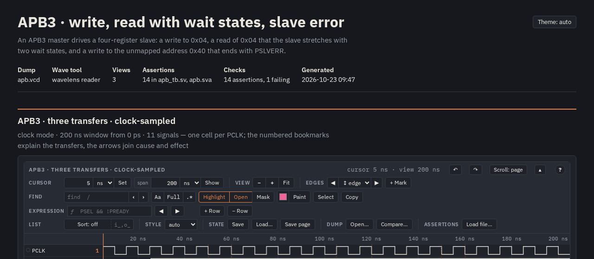
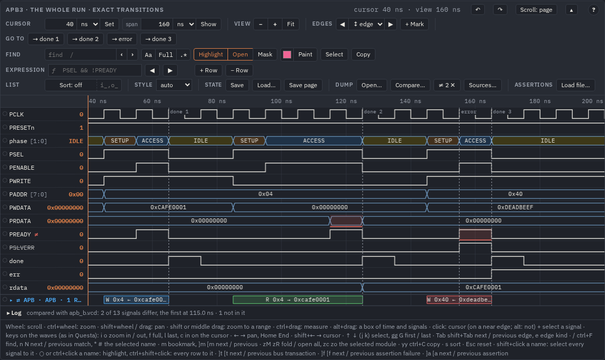
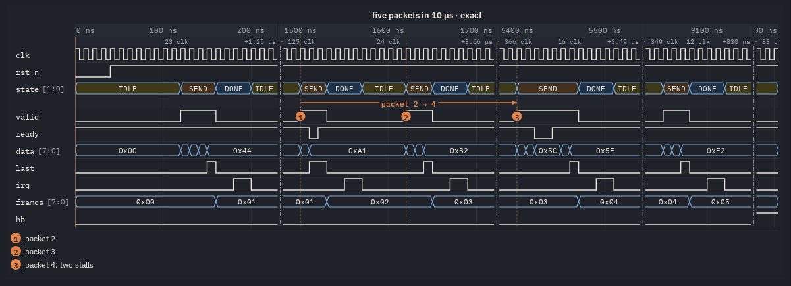
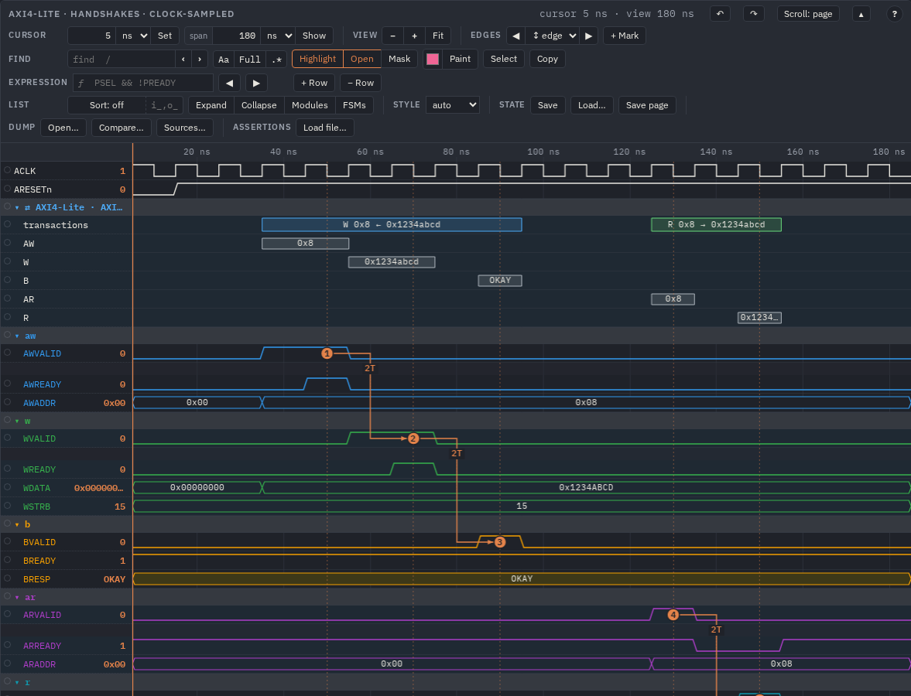
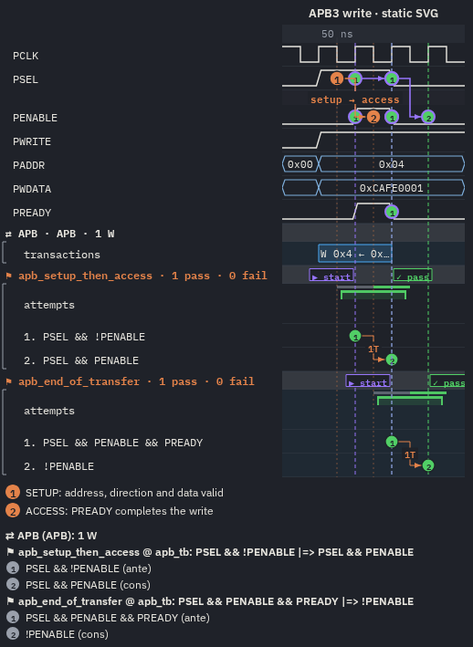
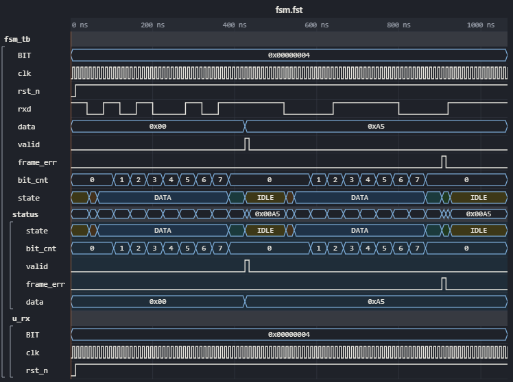
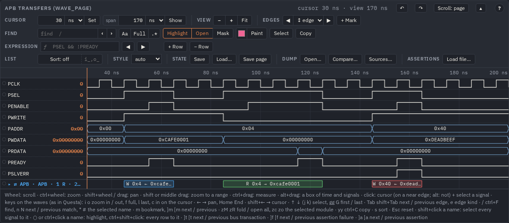

Guides
WaveLens turns a simulator dump (VCD or FST) or a
WaveDrom diagram into one self-contained HTML page: an interactive wave viewer,
static WaveDrom-style figures, SystemVerilog assertions checked over the waves. These guides walk through each part with pictures; open them
from file://, nothing to build.

1 · From a dump to a page
make html WAVES=…, the generated config and what to edit in it, views, colours, FSM names, structs, settings, themes.

2 · The viewer in the browser
The bar and its tools, zoom and pan, two cursors, cycles, edges, ranges, the right button's menu, find with Mask and Select, hierarchy, your groups, bookmarks and arrows, undo, save.

3 · Modules
The tree of the modules next to the waves: a click goes to one, a box keeps Only the ones you pick.

4 · Compare two runs
A second dump over the first: a red band where a signal differs, ≠ on its name, ]d to the next difference.

5 · Gaps
The idle stretches cut out of a saved picture or WaveDrom: idle, keep, the signals the gaps follow, the clock they count, the texts, the command line.

6 · Assertions (SVA)
Bind an assertion to an instance, read its attempts on the waves, take a failure apart with Why, edit and run again, reports for CI.

7 · Bus transactions
AXI, AXI-Stream, APB, AHB, Avalon, Wishbone and OBI ports found by their names and drawn as transfers, a row per channel.

8 · WaveDrom
Diagrams in your own page (viewer or static SVG), the supported subset and the extensions, WaveJSON from a dump and from the viewer.

9 · VS Code
The extension over Remote-SSH or WSL: a dump of the Linux host in a tab, files saved there, a new simulation read again, an agent live in the tab.

10 · Commands and scripts
What the buttons do, by name: from the console, viewedit.py on a page's file, an agent live in an open page.

11 · AI agents (MCP)
The MCP server for Claude Code, Codex or any client: questions about a dump as short JSON answers, assertions, a page to show a person.

12 · State names and structs
A VCD from Questa with its FSM states by name and its structs as fields: the design's types from Questa or Verilator, by path.
Where to start
- You have a dump and want to look at it: From a dump to a page, then The viewer.
- Your VCD shows numbers where the FSM has states: State names and structs.
- You want a picture of a long run for a document or a review: the right button's menu and Gaps.
- A design with many instances: Modules; a regression between two runs: Compare.
- You write assertions and want to see why one fails: Assertions.
- Your dumps are on a server or in WSL and you work in VS Code: VS Code.
- You write documentation with timing diagrams: WaveDrom.
- You mark up pages from a script or a CI job: Commands and scripts.
- You let an AI agent debug a simulation: AI agents.
The complete lists — every setting, key and option — are in USAGE.md; the reference with live examples is
docs/index.html; the SVA subset and the evaluator are in LANGUAGE.md and
ENGINE.md. The pictures of these guides are made by make guide-shots
(tests/guide_shots.py) from the examples' pages; the VS Code one by make vscode-e2e.